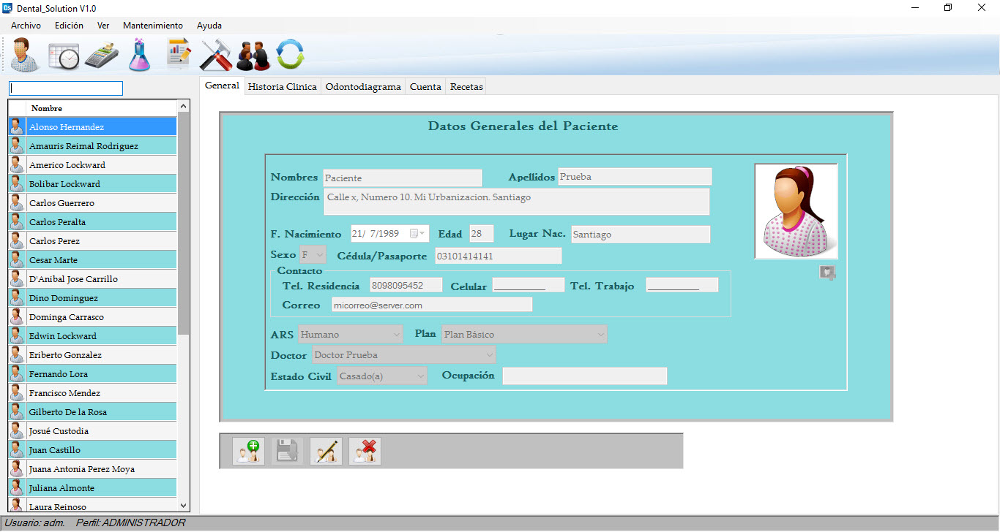
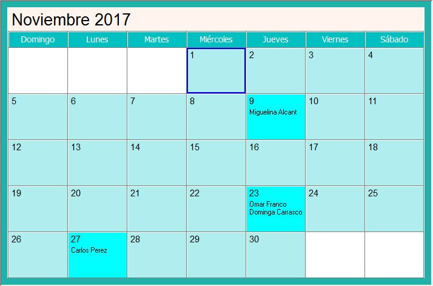
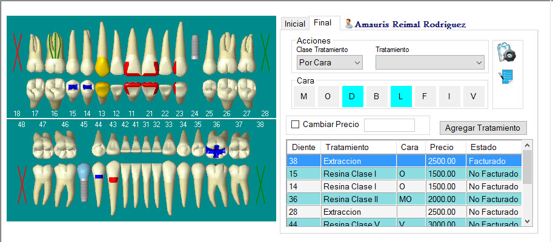
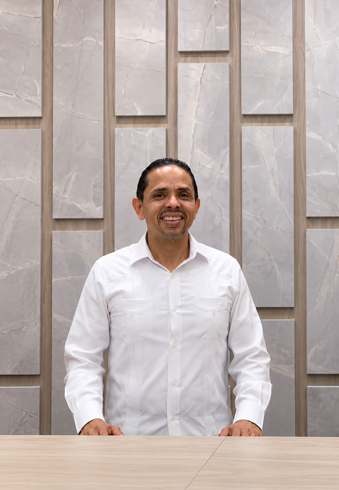
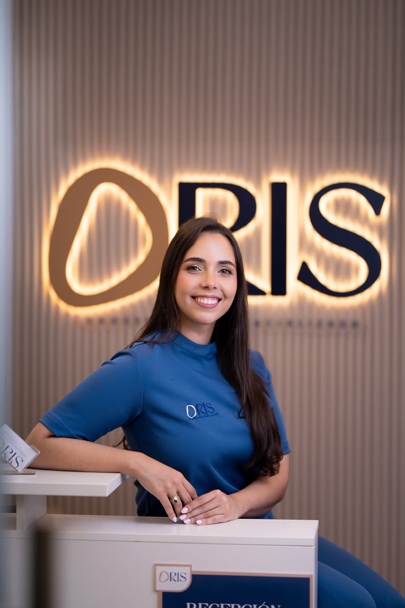
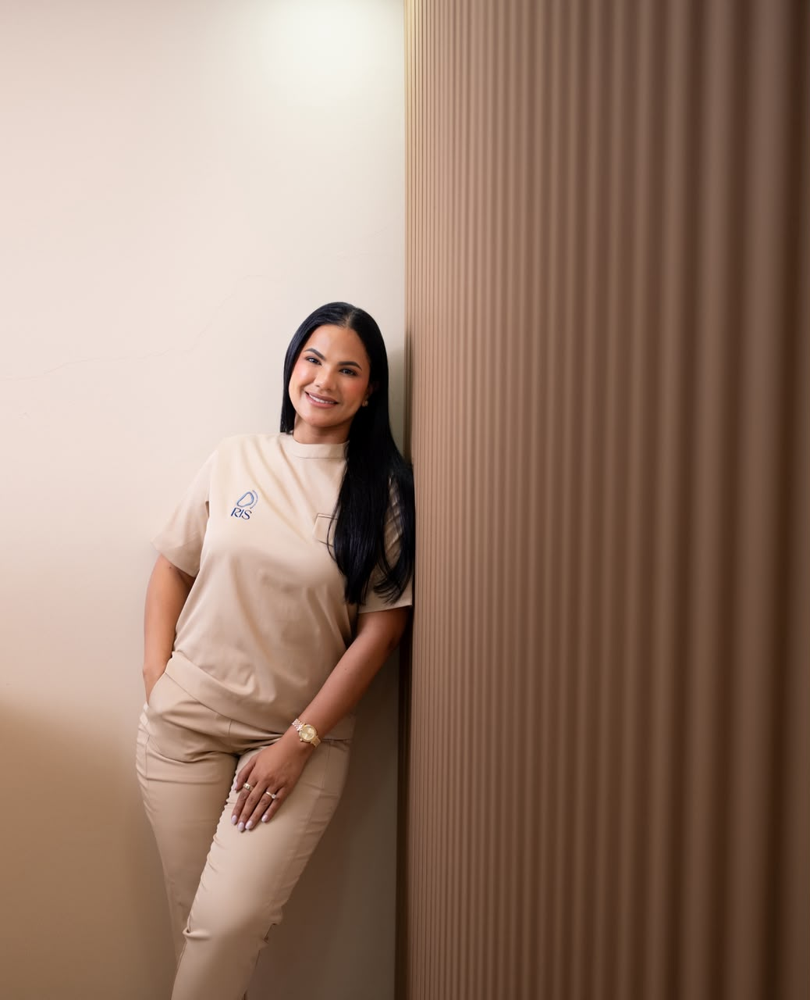

👤
Pacientes
Datos generales, fotografía, contacto, historia clínica y cuenta actualizada del paciente.
Administra pacientes, tratamientos, citas, facturación, laboratorio, recetas, imágenes y reportes desde una solución diseñada para el flujo real de una clínica dental.

Dental Solution integra las tareas clínicas y administrativas que forman parte del día a día de una clínica dental: expediente del paciente, historia clínica, odontodiagrama, agenda, facturación, laboratorio, recetas, imágenes y reportes.


Cada módulo ayuda a mantener la información conectada y disponible para el equipo que la necesita.
Datos generales, fotografía, contacto, historia clínica y cuenta actualizada del paciente.
El Odontodiagrama es 100% digital y dinámico, por lo que se adapta acada situación; los tratamientos se integran al proceso de facturación de forma natural.
Calendario dinámico para visualizar y organizar las citas de los doctores.
Facturación independiente o integrada con el odontodiagrama para agilizar el proceso administrativo.
Vademécum, histórico de recetas y alertas de medicamentos asociados a alergias registradas del paciente.
Seguimiento de pedidos y trabajos enviados al laboratorio, incluyendo su estado y fechas relacionadas.
Almacena imágenes del paciente, incluyendo radiografías periapicales y panorámicas.
Administra usuarios, perfiles y permisos según las funciones de cada miembro del equipo.
Reportes de pacientes, citas, facturas, reclamaciones de seguro y laboratorio, exportables a Word, Excel y PDF.
Estamos trabajando en una nueva experiencia web que complementa Dental Solution y amplía las posibilidades de acceso a la plataforma.
El doctor puede registrar tratamientos desde el odontodiagrama y mantener el avance del paciente organizado. El sistema contempla odontodiagrama inicial y final para visualizar la evolución registrada.
Quiero verlo en una demostración →Capturas reales del entorno de Dental Solution con información demostrativa.
Una solución desarrollada localmente, pensada para crecer con el consultorio, adaptarse a sus necesidades y ofrecer soporte directo.
Diseñado considerando los procesos y necesidades de consultorios y clínicas dentales del mercado dominicano.
Reduce la dispersión de información conectando procesos clínicos y administrativos.
Comunicación cercana para acompañarte en el uso y evolución del sistema.
Profesionales que han integrado Dental Solution a la gestión diaria de sus clínicas y consultorios comparten su experiencia con el sistema.

“El sistema de Dental Solution me ha permitido gestionar de manera eficaz y organizada todo lo relacionado con mi práctica odontológica. Es una herramienta muy completa, práctica y fácil de utilizar, que facilita el manejo de los procesos y contribuye a ofrecer un servicio más eficiente y de mayor calidad a nuestros pacientes.
Sin duda, Dental Solution se ha convertido en un aliado importante para el crecimiento de nuestro centro dental.”

“Desde que iniciamos este proyecto con ORIS, Dental Solution ha sido una herramienta fundamental para organizar y gestionar nuestro consultorio de manera más eficiente. Nos ha permitido llevar un mejor control de las citas, expedientes y procesos administrativos, facilitando mucho nuestro día a día. Es un sistema práctico y fácil de utilizar, que nos ayuda a tener toda la información de nuestros pacientes de manera accesible y ordenada.
Para nosotras ha sido un gran apoyo en el crecimiento y organización de ORIS, y definitivamente ha contribuido a que podamos brindar una experiencia más eficiente tanto para nuestro equipo como para nuestros pacientes.”

“Nuestra experiencia utilizando Dental Solution ha sido muy satisfactoria. Es una herramienta que nos permite mantener nuestro consultorio organizado.
Nos ha ayudado a centralizar la información de nuestros pacientes, gestionar citas y llevar un mejor control de todos los procesos relacionados con el consultorio. Cuenta con herramientas muy útiles para la gestión diaria, permitiéndonos trabajar de una manera más controlada y eficiente. Su manejo es súper sencillo y práctico, algo que valoramos mucho porque facilita el trabajo de todo el equipo.
Gracias a Dental Solution nos hemos mantenido enfocadas en lo más importante: nuestros pacientes y la calidad de la atención que les brindamos. ¡Totalmente recomendado!”
“Con Dental Solution estoy más que complacida y satisfecha. Como venía de utilizar otro sistema diferente, pensé que me sería difícil acostumbrarme y adaptarme a uno nuevo, pero fue todo lo contrario: es de fácil manejo y la adaptación fue muy sencilla.
¡Recomendado 100%!”
“Estoy muy satisfecha con Dental Solution. Es un programa fácil de manejar y posee todos los requisitos que se necesitan en una plataforma para gestionar la información de una clínica dental. Ofrece facilidad de uso y agilidad en la búsqueda de información de los pacientes, además de las excelentes atenciones que brinda el equipo.”
Solicita una demostración y conoce los módulos aplicados al flujo de trabajo de tu consultorio.